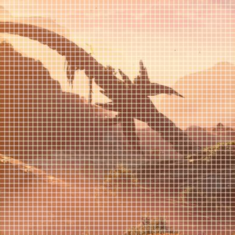

Steganography - Hiding data inside an image
Introduction
I lately watched this video where somebody tried to hide a savefile into a screenshot of the game. This would be a very cool feature - sending a screenshot of the game to your friends and then they could directly play where you left off.
This would normally be pretty easy to do as you could just add data to the meta data of an image. The issue that arrises is social media. Most social media platforms remove meta data from an image when processing.
The only real oportunity we have is encoding our data directly in the pixels of an image. The name of this process is steganography. After a bit of research I discovered that this is actually a very complex topic with thousands of research papers on it. It is widely used in cryptography and image watermarking.
I started my journey with PNGs but decided against it. The reason is because social media platoforms not only compress the meta data from an image but also the image itself. So pngs often times get compressed into jpegs. The only exception is discord.
So if we use an image format that already is compressed it is already more likely to get the correct data.
Before I dive into the steganography algorithm, I will quickly go over the jpeg algorithm
The JPEG algorithm
The jpeg algorithm is a lossy image compression algorithm that makes use of the human eye's limitations in perceiving fine details. It typically compresses images by 90% with only minor visible artifacts.
JPEGs can be compressed with different quality levels, where 1 gives the worst quality and 100 the best, but with the highest size.


Step 1
First the colors are converted from R-G-B to the Y-CB-CR color space (Y: Brightness, Cb = Color blueness, Cr = Color redness). Since the eye is less sensitive to the color channles, they also can be compressed further with chroma subsampling.
Step 2
The image is divided into 8x8 blocks.
Step 3
Each block is converted with the Discrete cosine transform (DCT). It produces a value for every DCT frequency (like seen below) that when all combined give an approximation of the original image. This works because most images have similar neighbouring pixels. With random noise this approach produces clear artifacts.

It results in a 8x8 matrix with 64 values that correspond to the DCT coefficients.
The first coefficient (top left) is the DC coefficient while the other 63 are the AC coefficients.
Step 4
The dct coefficients are quantized. This means the dct coefficients are divided by its corresponding constant in the quantization table. This table is calculated by the quality factor which produces higher numbers when it is lower. Additionally a higher quantization is applied in the lower frequencies. This gives a lot of zeros which is usefull for later and the core reason how the quality factor impacts the jpeg image.
Step 5
The new dct coefficient are then reordered in a zig-zag pattern This causes the lower frequency coefficients to be at the begin of the array and the higher frequency coefficients at the end.

Step 6
At the end the bits are encoded with the Huffman algorithm, which compresses the bits further by assigning codes to more frequent bit combinations. This is especially usefull in combination with the previous step, because the lower frequency coefficients tend to have a lot of zeros.
Steganography
For jpeg images we need to access the dct coefficients and modify them to fit the data. This also means that the visual quality of the image will be impacted. To test the performance we will be measuring the peak signal-to-noise ratio (PSNR)(in db), which determines if the visual quality of the new image. When no coefficient has been modifed the PSNR is infinity. From my testing a value above 40 is good and above 60 is unnoticable.
For testing I will encode just a message. But because the message might be not long enough to fill the entire image, I will encode random bits for the rest. Otherwise the PSNR is based on the message length. All tests are done on a quality of 80.
Algorithm 1: LSB
The least significant bit algorithm encodes the data in the least siginificant bit of the coefficient. I will only use the Y-channel for now.
Example:
Coefficient: 1100011 (99)
if nextbit = 0 -> 1100010 (98)
if nextbit = 1 -> 1100011 (99)
Results:
PSNR: 22,45
Payload: 38,87%
modifying every coefficient increases the size of the image by a lot because all the zeros in the low frequencies were changed. And thus the Huffman encoding does not work optimal. Most social media platforms will probably detect this and recompress it which will lose all data.
Algorithm 2: LSB without low frequencies
To fix the issues in the first algorithm we can simply exclude all zeros. And since 1 could be modified into 0, we also exclude 1.
Results:
PSNR: 40,816
Payload: 11,48%
Because the payload is smaller it makes sense that the PSNR is higher. This makes the capacity based on the image itself. So a completely white image will have a capacity of 0. In this case for a 1920x1080 image the capcity is 27kb.
Algorithm 3: Swap DCT
Up until now the data will be lost when already small modifications. Resizing, scaling attacks and noise attacks are out of scope for now, but I just wanted to highlight an algorithm that is a bit more robust against recompression than the LSB algorithm.
For this algorithm we select specific coefficients and compare them.
If C1 + Dmin < C2 -> 1
If C1 - Dmin > C2 -> 0
D is the minimum distance between the values (typically D = 1). I also included a maximum distance. The distances limit the visual distortion. For example interchanging 1 with 20 would be a visible artifact.
The different coefficients all have a different impact on the image in terms of visual quality and capacity so I tested which ones best suit this algorithm.

The lower frequencies have the highest capacity. But when testing I learned that the three lowest coefficients also introduce the biggest artifacts. The coefficients in the middle frequencies are best for encoding the data. Another conideration for choosing the best coefficient pairs is the quantization table. Since it will impact the values, also when it is a different quantization table, it is important to pair values that will get the same values on the quantization table.
Results:
PSNR: 44,72
Payload: 3,29%
The capacity is now even less but this method is a bit more robust. For better robustness the payload will probably go down below 0,1%.
Final remarks
Check out the source code here or get the tool directly here